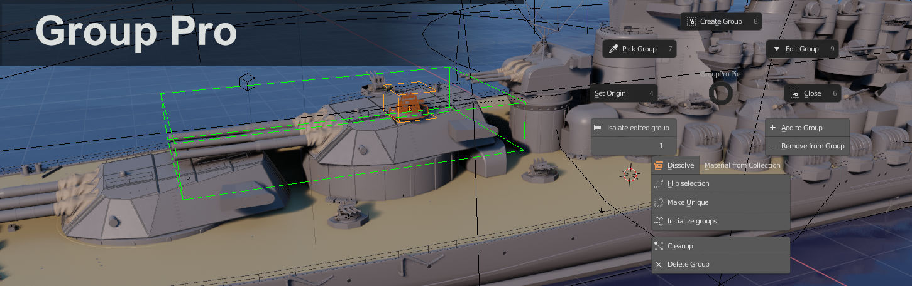
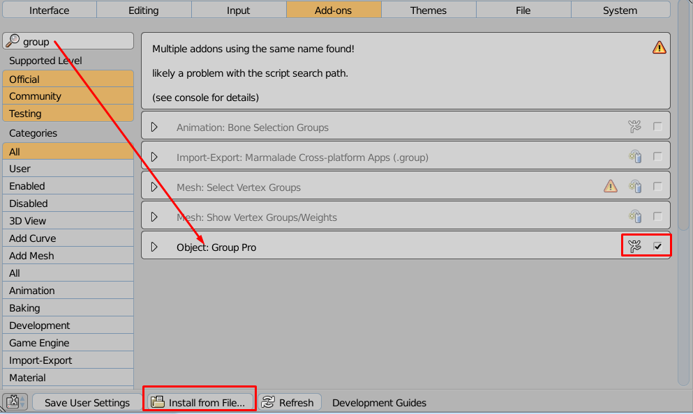
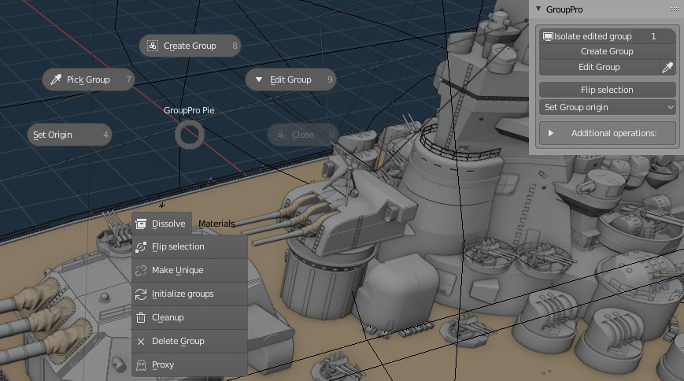

Group Pro Documentation¶

Installation¶
 File → User Preferences → Add-on tab Press 'Install from file' button, in bottom bar. Then you can search for addon by entering Group Pro in search bar. Be sure to have 'Community' button enabled under search bar. Press checkbox next to addon name to enable it, and then press 'Save user settings' so that Blender always loads GroupPro at startup. If you want you can also enable PivotPro, which is included in zip file you downloaded. Just search for pivot
Usage¶
Addon adds new panel in 3d view, in tools shelf → Relations tab. You can acess Group Pro menu under'ctrl+X' hotkey: 
To create new group select objects you want to join, and press 'Create Group'. You will notice selected objects are now merged into one group, and cannot be selected individually. To edit group components you have to open it with 'Edit Group' button.
After pressing it you will see green box around edited group (color depend on your settings in addon preferences). Any modifications performed on object that are member of group, will be saved after you press 'Close Group' button.
You can add or remove objects from group, while you have group opened, using Add/Remove from group buttons. Note: If you remove all objects from group, while editing it, group will be deleted after pressing 'Close Group' button.
Create Group¶
Joins selected objects in one, and creating GroupInstance from them. After using this function you can press F6 to change group name or change group pivot location (median point or 3d cursor location). Edit Group – you can perform modifications to GroupInstance, add/remove objects from it, after pressing this button. You will notice green box around objects that are members of group. Also in bottom left corner, there will be info with name of currently edited group name.
Close Group¶
Saves changes performed while you were in edit group mode, and merges objects back together. Add/Remove from Group – while you are in edit group mode you can press those buttons to add/remove selected objects from/to group. Changes will be saved after pressing Close Group button.
Set group origin¶
Changes pivot point of selected GroupInstance. This works only on active object.
Delete Group¶
Deletes group with subgroups and objects that this group is made of permanently from blender file. After using this operation you won't have access to deleted Group. In contrast using 'delete' key on keyboard, deletes group from scene, but you can still access and add back group from “shift+a”→'group instances” menu.
CleanUP¶
Cleanup unused groups (groups that are currently not being linked to scene) - with content. Useful when there are lots of GroupInstances under “Shift+A”→GroupInstances, and you don't need them, if they are not on scene. This command will delete groups only if they are not used on scene. On image below, we have clean scene, but there are two groups (CopyGroupGrid,GroupGrid). After using 'CleanUp' operator both of those groups will be deleted.
Flip selection¶
clones and mirrors object around chosen axis. After using this function you can press F6, to change axis of mirroring, pivot point (scene center, or 3d cursor), or disable duplication. This button was developed, because creating mirrored group instance is buggy, so I created 'Flip selection' button.
Make unique¶
Makes selected Group separate instance. Use it when you want to customize look of one Group, without affecting look of other instances that are already on scene. 'Make Unique' has 'maxDepth' parameter - Maximum depth for which unique groups will be created. 0-inifinite depth, default=1
Convert to geometry¶
Very similar to build in blender operator “make duplicates real (shift+ctrl+A)”. It splits Grouped object into separate, individual mesh objects. Initialize groups – when you copy GroupInstance from one blend file to another (using ctrl+c, ctrl+v), you may noticed pasted Group is messy - all objects, that the GroupInstance is made of, are visible. To cleanup scene after pasting new Group into scene, select all the objects and press 'Initialize groups'. I will hide all unnecessary objects leaving only relevant GroupInstances.
Limitation of GroupPro¶
-
As a final note, I want to warn you not to use group offset feature, form group panel. Group offset is used by script for calculating data, and it should be never edited by hand. If you do so, group offset will be calculated in wrong way, which will result in incorrect display of group instances.
-
Baking in supported only through addons. There are two addons:
- Free fork of Metldown – baking in cycles bit slow. For now works only in blender 2.79. I do not provide support for this.
- Batchtool Baker – Baking is done through Allegorithmic Substance Batchotools. This is addon I'm going to fix/develop because it is way faster for baking, and I use it in my commercial jobs. Batchtool baker works also without GroupPro.
- editing groups linked from external file is also not supported.